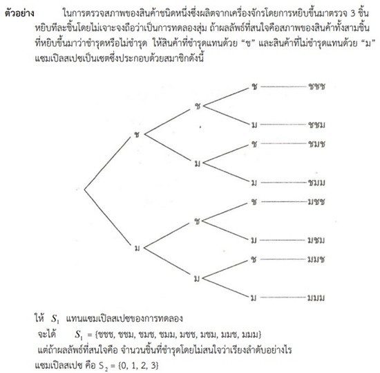

ความหมายและความสำคัญ
ความน่าจะเป็นถูกนำมาใช้ในระบบคอมพิวเตอร์เพื่อจัดการกับข้อมูลที่มีความไม่แน่นอน การประมวลผลข้อมูลขนาดใหญ่ (Big Data) และการทำงานของระบบเครือข่าย ค่าความน่าจะเป็นตั้งแต่ 0 ถึง 1 จะถูกใช้ในการคำนวณค่าน้ำหนัก (Weights) ของโมเดล หรือการคาดการณ์พฤติกรรมของระบบและผู้ใช้งาน